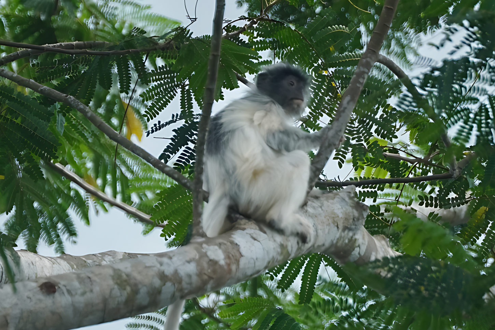
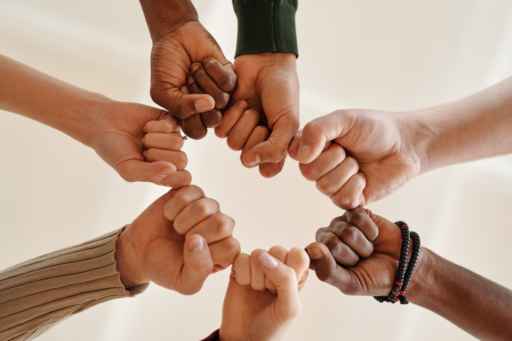

Program Pillars
The three pillars of our work are Research & Education, Community Empowerment, and Advocacy & Collaboration. By advancing scientific research, sharing knowledge, and strengthening communities, we create conservation that is not only about protecting forests but also about sustaining the lives of Belitung’s people.

Research & Education
Through ecological research on silvered langurs, we generate knowledge that is shared with local communities, turning science into meaningful conservation action.

Community Empowerment
By fostering sustainable ecotourism and conservation practices in local tourism villages, we make sure that safeguarding nature also strengthens the prosperity of communities.

Advocacy & Collaboration
Working hand in hand with governments, scholars, and communities, we create conservation alliances that safeguard Belitung’s forests for future generations.